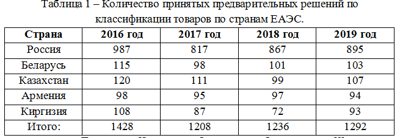
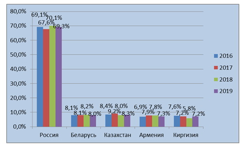
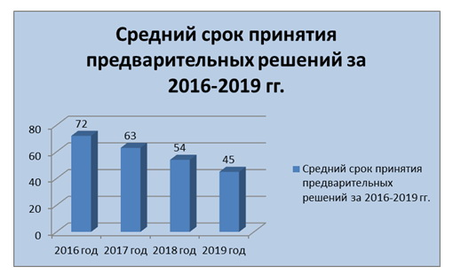
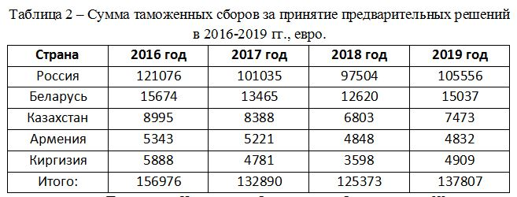
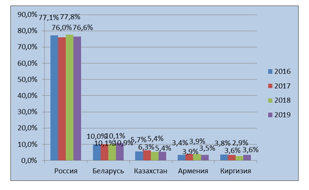
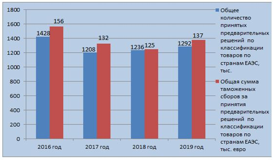

Анализ предварительных решений по классификации товаров за период с 2016 по 2019 года
Нередко при таможенном оформлении товаров таможня не принимает код ТН ВЭД, который заявляет декларант, и настаивает на применении другого кода, влекущего,
как правило, более высокую ставку пошлины.
Именно в таких случаях ситуацию может спасти предварительное решение по классификации товара.
Предварительное решение может понадобиться, когда у импортера или у таможни есть сомнения в коде ТН ВЭД товара до его ввоза, либо когда товар уже ввезен и находится
на складе временного хранения. Во избежание расходов на хранение и прочих неприятных моментов при таможенном оформлении рекомендуется оформить предварительное
решение заранее.
Предварительное решение может помочь и в ситуации, когда таможня проводит проверку после выпуска товара и желает «переклассифицировать» товар, то есть поменять его
код ТН ВЭД и доначислить таможенные платежи. В этом случае предварительное решение также позволит избежать излишней уплаты платежей и возможных административных
штрафов.
Иными словами, импортеры оформляют предварительное решение для своего спокойствия и уверенности в том, что у таможни не будет вопросов к коду товара, особенно, когда
этот код не очевиден, что бывает весьма часто.
Решения о классификации товаров оформляются в соответствии со статьями 21 и 23-27 Таможенного кодекса Евразийского экономического союза.
В период 2016-2019 в странах ЕАЭС было принято 5164 предварительных решения по классификации товаров различных товарных групп.

Как видно из таблицы, большая часть решений принята на территории Российской Федерации. Это можно объяснить тем,
что данное государство территориально является самым крупным, а также количеством таможенных органов.
На рисунке 1 представлен удельный вес каждой страны в общем количестве предварительных решений по классификации товаров.

Рисунок 1 – Удельный вес принятых предварительных решений по классификации товаров по государствам-участникам ЕАЭС за 2016-2019гг.
Предварительное решение принимается в течение 90 дней со дня регистрации заявления. В период 2016-2019 гг.
наблюдается тенденция к сокращению сроков принятия решения по классификации товаров в соответствии с Товарной
номенклатурой внешнеэкономической деятельности.
Так в 2016 году в среднем на приятие решения требовалось 72 дня. К 2019 году данный показатель составил 45 дня.

Рисунок 2 – Средний срок принятия предварительного решения по классификации товаров за 2016-2019гг.
За приятие предварительного решения необходимо заплатить государ-ственную пошлину (таможенный сбор).
В Республике Беларусь за одно предварительно решение необходимо заплатить 300 бел. руб., что в эквиваленте составляет 120 евро.
В Российской Федерации стоимость предварительного решения по классификации товаров составляет 5000 рос. руб., что в эквиваленте составляет 114 евро. В Казахстане
данная услуга составляет 70 евро.
В Республике Армения и в Республике Киргизия таможенный сбор за принятие предварительного решения по классификации товаров соответствии с ТН ВЭД составляет 50 евро.

Как видно из таблицы 2, основная доля таможенных сборов приходится на Российскую Федерацию (около 77%). На Республику
Беларусь приходится в среднем 10% от общей суммы таможенных сборов за принятие предварительного решения по классификации
товаров. Около 13% суммы таможенных сборов приходится на Казахстан, Армению и Киргизию. Данная информации более подробно
представлена на рисунке 3.

Рисунок 3 – Удельный вес таможенных сборов по государствам-участникам ЕАЭС за 2016-2019 гг.
Данные рисунка демонстрируют, что незначительное снижение общего количества принятых предварительных решений по классификации товаров ведет за собой
к снижению сумм таможенных сборов за принятия предварительных решений по классификации товаров по странам ЕАЭС (Рисунок 4).

Рисунок 4 –Динамика изменения общего количества принятых предварительных решений по классификации товаров по странам ЕАЭС за 2016-2019 гг.
Таким образом, можно сделать вывод, что в период 2016-2019 гг. наблюдается тенденция к сокращению сроков на принятие
предварительного решения по квалификации товаров. Основное количество принятых предварительных решений, а соответственно
и сумма таможенных сборов приходится на Российскую Федерацию.
Исходя из вышеизложенного, можно сделать следующие выводы:
– предварительное решение по классификации товаров принимается для сокращения количества случаев неверного кодирования
товаров;
– для принятия предварительного решения необходимо обратиться в таможенный орган с заявлением и предоставить необходимые
документы;
– за принятие данного решение необходимо уплатить таможенный сбор;
– в странах Европейского союза наблюдается тенденция к увеличению количества принятых предварительных решений, а
соответственно и суммы уплаченных таможенных сборов;
– в странах Евразийского экономического союза основное количество принятых решений наблюдается в Российской Федерации.
Также необходимо отметить, что сумма таможенного сбора в данных странах отличается.